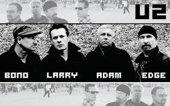

Favorite Artists At the Moment
U2
U2 is a classic rock band that originated in Dublin, Ireland, eventually moving to the United States and becoming a huge success. U2's lyrics are known for their social and political commentary, and are often embellished with Christian and spiritual imagery. Ever since I was little, I have fond memories of my parents playing U2 throughout my house. When I grew up, I started to undestand the lyrics more and came to respect the band for their artisitic side of music. I have U2 on my Spotify playlist and listen to their songs frequently. They are a classic favorite of mine that will always have a special place in my heart.

Favorite Songs: